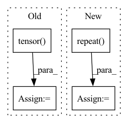

Pattern ID :31824
Before Change
pos_batch = pos_batches[i]
label_batch = label_batches[i]
pos_batch = torch.tensor(pos_batch, dtype=torch.long, device=device)
label_batch = torch.tensor( label_batch, dtype=torch.float, device=device)
predictions = kg_embedding_model(pos_batch[:, 0:1], pos_batch[:, 1:2])
loss = kg_embedding_model.compute_loss(pred=predictions, targets=label_batch)
loss.backward()After Change
labels = []
for subj_rel in subject_relation_pairs:
subj_rel_rep = np.repeat( subj_rel,axis=0)
label = (pos_triples[:,0:2] == subj_rel).all(axis=1)
// objects = pos_triples[mat, 2:3]
// objects = np.unique(np.ndarray.flatten(objects))
// label_vec = np.in1d(entities, objects) * 1In pattern: SUPERPATTERN
Frequency: 3
Non-data size: 4
Instances Fragment ID: 93055600
Project Name: pykeen/pykeen
Commit Name: c9302b9f07967d1d474435e53355e3bd308cfd45
Time: 2018-09-12
Author: ali-mehdi@live.de
File Name: src/utilities/train_utils.py
M Class Name: AnonimousClass
N Class Name: AnonimousClass
M Method Name: train_conv_e_model(7)
N Method Name: train_conv_e_model(7)
M Parent Class:
N Parent Class:
M File Name: src/utilities/train_utils.py
N File Name: src/utilities/train_utils.py
M Start Line: 108
M End Line: 140
N Start Line: 100
N End Line: 128
Before Change
state_buffer = padding.repeat(
self.kernel_size[0] - 1, *[1 for _ in self.input_shape_desciption]
)
state_index = torch.tensor( 0)
stride_index = torch.tensor(
self.stride[0] - len(state_buffer) - 1 + self.padding[0]
)
if not hasattr(self, "state_buffer"):After Change
padding = self.make_padding(first_output)
repeat_shape = [self.kernel_size[0] - 1]
repeat_shape.extend((1,) * len(self.input_shape_desciption))
state_buffer = padding.repeat( repeat_shape)
state_index = 0
stride_index = self.stride[0] - len(state_buffer) - 1 + self.padding[0]
// if not hasattr(self, "state_buffer"): Fragment ID: 93055607
Project Name: lukashedegaard/continual-inference
Commit Name: 1e6964a31874287527720453b1c9216ddedd5a01
Time: 2022-11-29
Author: lh@eng.au.dk
File Name: continual/conv.py
M Class Name: _ConvCoNd
N Class Name: _ConvCoNd
M Method Name: init_state(2)
N Method Name: init_state(2)
M Parent Class: _ConvNd,CoModule
N Parent Class: _ConvNd,CoModule
M File Name: continual/conv.py
N File Name: continual/conv.py
M Start Line: 125
M End Line: 135
N Start Line: 133
N End Line: 138
Before Change
kld_weight = kwargs["M_N"] // Account for the minibatch samples from the dataset
log_p_x_z = ((recons - input) ** 2).flatten(1).mean(-1)
pi = torch.tensor( np.pi, dtype=torch.float)
E_log_q_z = torch.sum(-0.5 * (eps ** 2) - 0.5 * torch.log(2 * pi) - log_var, dim = 1)
E_log_p_z = torch.sum(-0.5 * (z ** 2) - 0.5 * torch.log(2 * pi), dim = 1)
// Get importance weights
log_weight = (recons_loss + E_log_p_z - E_log_q_z).detach().data
weight = F.softmax(log_weight, dim = 0)
kld_loss = torch.mean(E_log_q_z - E_log_p_z, dim = 0) //torch.mean(-0.5 * torch.sum(1 + log_var - mu ** 2 - log_var.exp(), dim = 1), dim = 0)After Change
z = args[4]
eps = args[5]
input = input.repeat( self.num_samples, 1, 1, 1, 1) .permute(1, 0, 2, 3, 4) //[B x S x C x H x W]
kld_weight = kwargs["M_N"] // Account for the minibatch samples from the dataset
Fragment ID: 93055606
Project Name: antixk/pytorch-vae
Commit Name: 692e7a333a9ceb10076a912fbd977f5d4e8e1349
Time: 2020-01-21
Author: anandkrish894@gmail.com
File Name: models/iwae.py
M Class Name: IWAE
N Class Name: IWAE
M Method Name: loss_function(1)
N Method Name: loss_function(1)
M Parent Class: BaseVAE
N Parent Class: BaseVAE
M File Name: models/iwae.py
N File Name: models/iwae.py
M Start Line: 133
M End Line: 153
N Start Line: 139
N End Line: 161